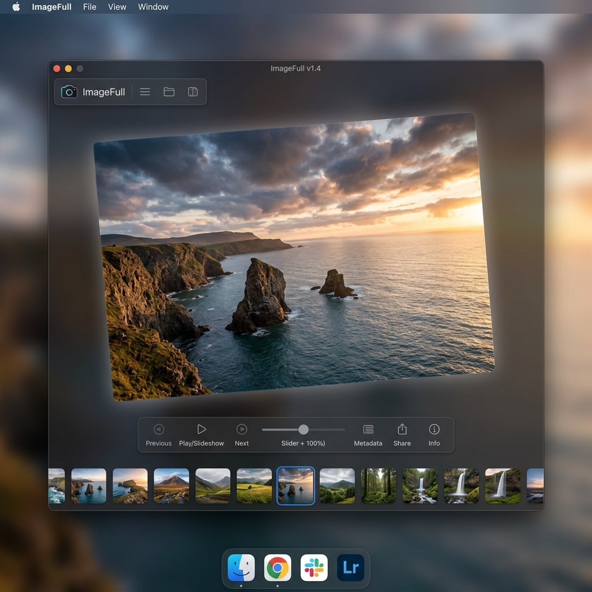

Lumina
Presentation
A experiência visual mais moderna para suas fotos. Transforme simples pastas de imagens em apresentações profissionais e imersivas.

Funcionalidades Principais
Projetado para oferecer o máximo de performance e elegância.
Modo Projeção
Controle a apresentação em uma tela enquanto projeta em tela cheia em outro monitor. Ideal para eventos.
Trilha Sonora
Adicione música de fundo para criar a atmosfera perfeita durante suas apresentações de slides.
Inteligência de Dados
Visualize metadados EXIF detalhados: câmera, ISO, abertura e data original em tempo real.
Filtros Rápidos
Aplique efeitos como P&B, Sépia e o exclusivo filtro "Mangá" instantaneamente.
Customização Total
Ajuste velocidade de transição, Safe Area (bordas) e modos de preenchimento (Cover/Contain).
Auto-Updates
Sistema integrado que busca e instala novas versões automaticamente via GitHub.
Tecnologias Utilizadas
Construído com o que há de mais moderno no desenvolvimento desktop.
Electron
CSS3 Glassmorphism
JavaScript ES6+
Exifr
Pronto para brilhar?
Aperte F5 e transforme suas fotos em arte.